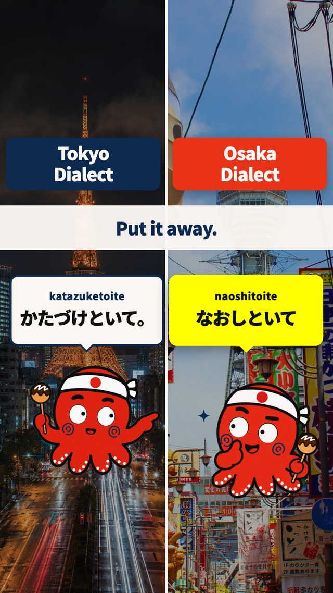
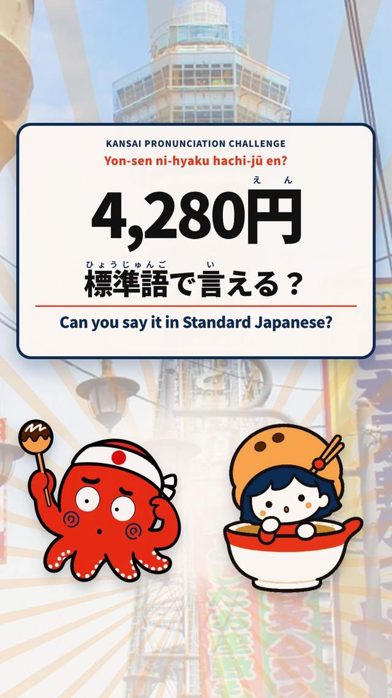
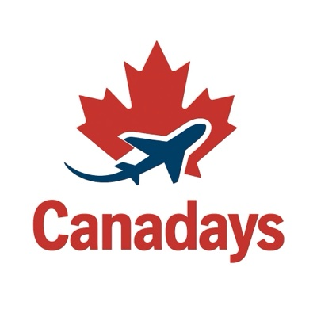

日本語学校の方へ
英語圏の日本語学習者を、貴校へ。
日本語講師が、学習者のレベルと目的を英語でうかがったうえでご紹介します。紹介料は入学確定後の成功報酬です。専属契約はお願いしません。
日本語講師が、学習者のレベルと目的を英語でうかがったうえでご紹介します。紹介料は入学確定後の成功報酬です。専属契約はお願いしません。
私はオンラインで、英語圏の方に日本語を教えている日本語講師です。レッスンの中で「日本に留学したい」「どの学校を選べばいいか分からない」という相談を、日常的に受けています。
日本語を教えている立場から、その方のレベルと目的に合いそうな学校をお伝えしています。学校の皆さまには、レベルと目的をうかがい、英語での事前の質問に答え終えた学生をお引き合わせします。
紹介料は入学が確定してからの成功報酬で、専属（1校のみ）契約はお願いしません。まずは貴校のコースと受け入れ条件を教えてください。


新しく集客するのではなく、すでに接点のある方にお声がけします
英語圏（北米・オセアニア・欧州など）の日本語学習者。講師として毎週会っているので、いまのレベルや学習のペースを把握したうえでご紹介できます。
関西弁と標準語の違いを英語で解説する Instagram。閲覧の86%が海外から。「地元の人のように日本を楽しみたい」層に直接届きます。
カナダ・バンクーバーで毎週ひらかれる言語交換イベント。日本語を学びたい方が、国籍を問わず集まります。
広告ではなく、日々の発信で学習者とつながっています


日本語を学ぶ外国人に向けて、標準語と関西弁の違いを英語で解説するアカウントです。2026年8月開設、週3本、英語＋日本語。企画から制作・投稿・分析まで、すべて自分たちで行っています。
数値は Instagram の管理画面（インサイト）で確認した値です。それぞれ集計した時点が異なります。
オンラインに加えて、日本語を学びたい方に対面でも会っています

カナダ・バンクーバーで言語交換イベントを主催しているコミュニティです。日本語と英語の言語交換を毎週ひらいていて、日本語を学びたい人がカナダ人に限らず集まります。BBQなどの屋外イベントもあり、参加者が毎週顔を合わせる場になっています。韓国・南米・ヨーロッパ・アジアなど、参加者の国籍はさまざまです。
学生の負担を増やさずに、学校とつながる仕組みです
どの学校が自分に合うか。いまのレベルでどのコースに入れるか。日本での生活で何に困るか。日本語講師として、すべて英語で答えます。学生からは費用をいただきません。ここで目的と期間を言葉にしてから、学校へ進みます。
短期（1〜3か月）と長期（1年程度）の両方。カウンセリングを経た学生を、レベル・目的・希望時期とあわせてご紹介します。紹介料は入学確定後の成功報酬です。学生側は無料なので、費用の話で学生が離れることがありません。金額・条件は学校ごとにご相談します。
「送客」だけではなく、英語での入口を一緒に作ります
問い合わせから出願前の細かな質問まで、英語でのやり取りはこちらで担当します。貴校とは日本語でやり取りします。
「このコースで、いまのレベルから伸びそうか」を英語で確認したうえで、レベル・目的・希望時期をそえてご紹介します。
まず1〜3か月の短期で来て、合えば長期へ。学校のコース設計に合わせて、紹介の形を調整できます。
「英語での発信まで手が回らない」というお話をよくうかがいます。貴校の Instagram や英語ページの整備も、外国人向け SNS運用代行として承れます。
KOTOHA からご紹介した学生への特典です。貴校のご負担はありません
在学中、KOTOHA がひらく言語交換ミートアップに無料で参加できます。日本人の友人ができて、授業で習った日本語をその日のうちに使う場になります。
バンクーバーの Canadays がひらく言語交換イベントに、帰国後も無料で参加できます。週5回ひらかれ、毎月700名以上が参加するコミュニティです。留学が終わっても日本語を話す場が残り、そこで貴校での1年の話が、次に留学を考えている人に伝わります。
初回は、貴校のコースと受け入れ条件をお聞かせください
コース・入学時期・費用・寮や住まい・英語対応の有無・受け入れたい学生像をお聞きします。オンライン30分。
初回・無料レベル・目的・期間・予算を英語で聞き取り、合いそうな学校を数校に絞ります。
英語で実施学生の情報（レベル・目的・希望時期）を共有し、学校説明会や見学、オンライン面談を調整します。
通訳も対応学校の指示に沿って、学生の出願をサポート。必要書類は本人が用意し、KOTOHA は作成に関与しません。
成功報酬はここから生活や授業の困りごとを英語でうかがい、学校へ共有します。次の学生にも、貴校の様子をお伝えできます。
継続的に


入学が確定してからの成功報酬です。金額と条件は、学校のコース・期間（短期／長期）に合わせて個別にご相談します。専属契約はお願いしませんので、他のエージェントや直接募集と並行してご利用いただけます。
英語で相談できる学習者が中心です。カナダ・アメリカ・オーストラリア・イギリスなどの英語圏のほか、英語で日本語を学んでいるアジア・欧州・南米の方も含みます。オンラインレッスンの生徒、Instagram（海外閲覧86%）の読者、そしてバンクーバーの言語交換コミュニティ Canadays が主な接点です。
2026年10月に開業したばかりで、まだ実績はありません。数のお約束はできませんが、まずは少人数を丁寧にご紹介し、入学後の様子までご報告します。合いそうな学校を知りたいので、まずは貴校のコースの特徴を教えていただけますと幸いです。
大丈夫です。出願前の英語でのやり取りは KOTOHA が担当し、学校とは日本語で連絡します。オンライン説明会や面談の通訳も対応します。必要であれば、学校の Instagram や英語ページの整備もお手伝いします。
在留資格認定証明書の申請は、学校と学生本人の間で進めていただきます。経費支弁書などの書類は、本人と家族が用意したものをそのまま提出します。KOTOHA は書類の作成には関与しません。短期（90日以内）の場合は、学生本人の短期滞在での来日を前提にご案内します。
まずは貴校のコース・入学時期・受け入れ条件をお聞かせください。オンライン30分で、紹介できそうな学生像と進め方をご説明します。